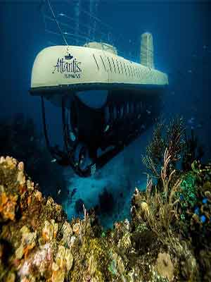
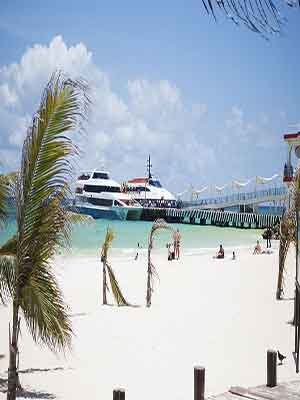
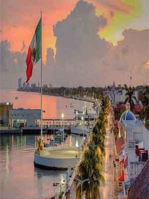

Atlantis Submarine

Tell your vacation story for years to come, after a tour with Atlantis Submarines.
Join the meager 1% of the world’s population to travel more than 100 feet – over 30 meters –
below the surface to discover the wonders of the deep.
Take the plunge in Mexico’s only submarine designed for tourists to explore the tropical
life of the Caribbean. Mysteries, like the sunken ship Felipe Xicotencatl, and the 400-foot
vertical drop affectionately known as The Wall, come alive as you peer into the depths through
one of 26 portholes.
Go deeper. Choose your adventure.
Atlantis Submarines wants to share the experience of a lifetime while guaranteeing your safety
and our commitment to ocean health. We strive to go above and beyond every standard and certificate
available for underwater exploration.
Read More...
Playa del Carmen

The primary gateway between Cozumel and the mainland of the Yucatan Peninsula,
including Cancun and the Riviera Maya, is the passenger ferry from Playa del Carmen.
Thousands of tourists and locals every day take the 45 minute ride to or from Cozumel.
It's very easy, and runs nearly every hour. The ferry makes it a piece of cake to go to or
from Cozumel on a day trip, which is especially popular with cruise ship passengers coming to
the mainland to see attractions like the Mayan Ruins, Xcaret, or Xel Ha.
You can walk there from anywhere in San Miguel (downtown). From areas outside of town, you'll just
take a taxi from your hotel or where ever you happen to be on the island. Taxis are readily available all over Cozumel.
Very easy.
Read More...
Chankanaab Park

Located inside Cozumel´s National Reef Marine Park. Enjoy our beautiful beach and snorkel
or scuba dive the most beautiful reefs on the island. Plenty of amenities to choose from:
eco-archaeological tour, sea lion show and manatee, snuba and seatrek tours, swim with
dolphins tours, spa, tequila tour, temazcal, and much more. It´s no wonder why Chankanaab
is the #1 attraction in Cozumel!
Cozumel is the largest inhabited island in the Mexican Caribbean and the first spot to receive the sun rays along Mexico.
Its inhabitants are jealous guardians of their traditions as the heritage of the great Mayan culture. It is known as the” Island of the Swallows” which’s
name derivates from the Mayan words “cuzam” that means swallow, and “humil” that means “land of”, forming the word “Cuzamil”. As the first catholic mass
in Mexican land was officiated right here, this relevant event is part of the fascinating history of Cozumel who also features Mayan archaeological sites
such as the”San Gervasio“structures.
Read More...
Cozumel Malecon

Malecon cozumel is a 5.4 mile (12,000-step) route located near San Miguel de Cozumel,
Quintana Roo, Mexico. This route has an elevation gain of about 26.2 ft and is rated as easy.
Find the best walking trails near you in Pacer App.
The Malecon is the main road that runs north/south along the waterfront on the west side fo the island. Also known as Rafael Melgar.
The "Giant tree" is a huge Cieba tree between the new road and the old road as you head to the southern end of the island. Once you see it,
you know that you are getting close to Punta Sur and the beach bar Freedom in Paradise". It is impressive.
Malecon is the main drag all through town. Ocean on one side, shops on the other side of the road. I think that the tree is on
the old road going south out of town but someone a little more familar to where is it will have to give a more detailed location.
Read More...